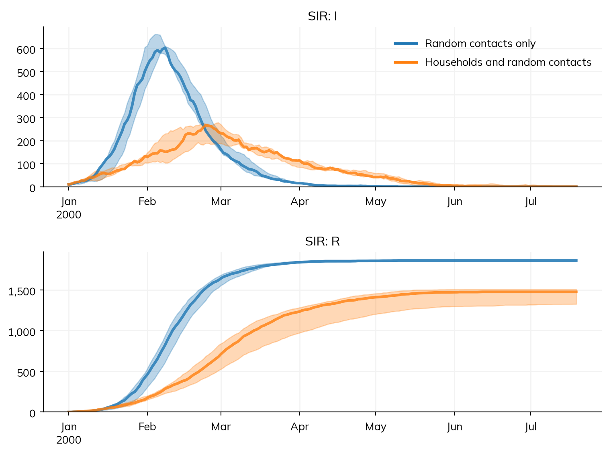
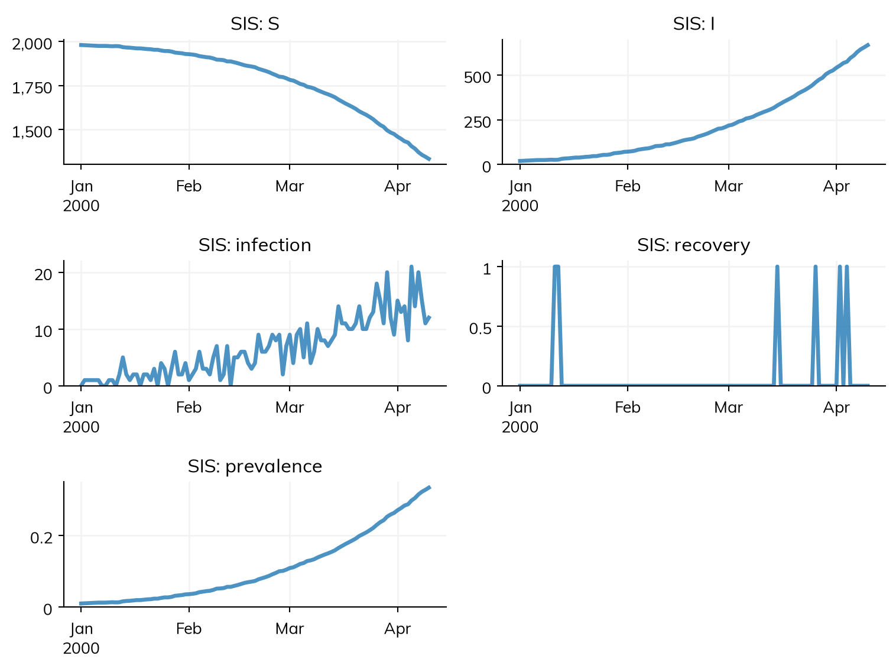
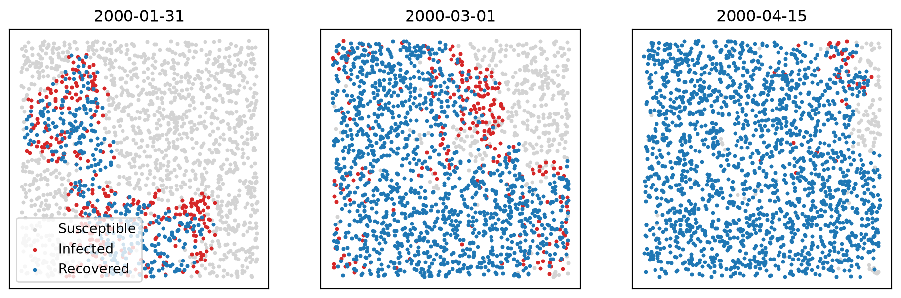
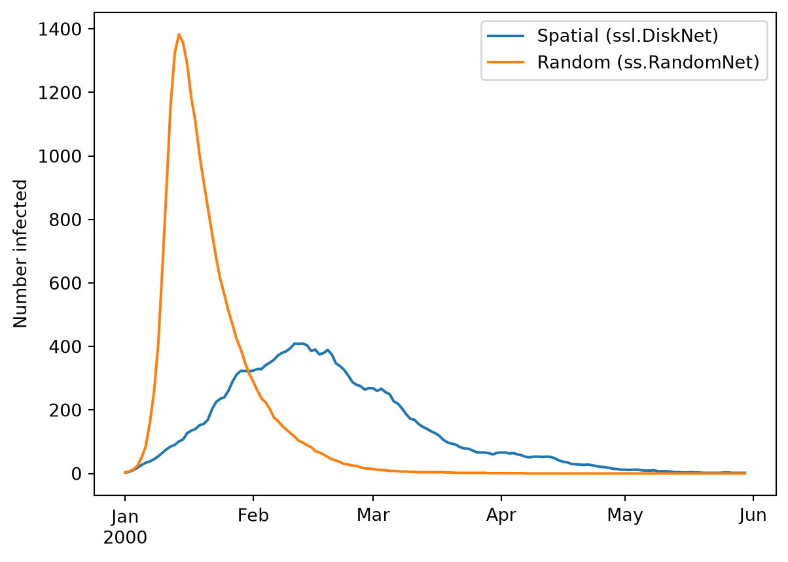
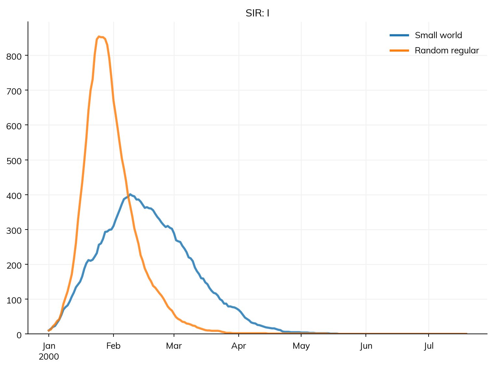

Core Starsim has the networks most models need: random contacts (ss.RandomNet), partnerships (ss.DegreeNet, ss.SexualNet), mother and child (ss.PrenatalNet and its relatives), mixing pools, and contact matrices; they, and how to write a network of your own, are on Contact networks. The Starsim library (import starsim.library as ssl; see Library: diseases for what the library is) has eight more, for households and other clusters, for space, and for theoretical work:
Each person in contact only with themselves, with no transmission, as a placeholder
none
Like every network, these carry agents, so a model with one runs under the agent-based solver; Contact networks says how each would be approximated by a compartmental one. The tutorial A2 – Networks introduces networks with a worked example.
Households and other clusters
Much transmission happens within households, schools, and workplaces: small groups whose members meet each other again and again. A random network with the same number of contacts spreads infection faster, because each contact is with someone new; in a household, an infectious person soon runs out of susceptible people to infect. ssl.ClusterNet divides people (optionally only those in age_range) into clusters of sizes drawn from cluster_size (by default Poisson with a mean of 4), with everyone in a cluster in contact with everyone else. Its contacts are made once, at the start (or redrawn every step, with dynamic=True).
Here the same SIR disease spreads with about 6 contacts per person: all of them random, or 1 random and the rest in households of about 6. With the same number of contacts, the households slow the epidemic, lower its peak, and leave more people never infected, since many of each person’s contacts are already infected or immune. Each scenario is run 3 times, and the plot shows the median and the range:
import numpy as npimport matplotlib.pyplot as pltimport starsim as ssimport starsim.library as sslsir =lambda: ss.SIR(beta=ss.perday(0.05), dur_inf=ss.days(10), init_prev=0.005)kw =dict(n_agents=2000, start='2000-01-01', dur=ss.days(200), dt=ss.days(1))scenarios = {'Random contacts only': ss.Sim(diseases=sir(), networks=ss.RandomNet(n_contacts=6), **kw),'Households and random contacts': ss.Sim(diseases=sir(), networks=[ssl.ClusterNet(cluster_size=ss.poisson(6)), ss.RandomNet(n_contacts=1)], **kw),}msim = ss.parallel(scenarios, n_runs=3, parallel=False)msim.plot(['sir.I', 'sir.R'])
Starsim kernels: Rust, OUT OF DATE (built before its source last changed, so results may be wrong): run "./build" in starsim/solvers/rust/
MultiSim: 6 runs of 2 scenarios (Random contacts only, Households and random contacts)
Done in 3.1 s

ssl.HybridNet is the population of Covasim: households (h, a ClusterNet with sizes drawn from a Poisson distribution with a mean of 2, as in Covasim, which gives about 2 contacts per person), schools for ages 6 to 22 (s), workplaces for ages 22 to 65 (w), and the community (c). Schools and workplaces are clusters too, and the community is a random network, with a Poisson number of contacts in each (contacts, by default 20, 16, and 20); clustered=False makes schools and workplaces random networks, as in Covasim. When added to a sim, it becomes four networks, each reached by name and each with its own weight on transmission (beta, by default Covasim’s 3, 0.6, 0.6, and 0.3), so that a contact at home counts for 10 times one in the community:
sim = ss.Sim(diseases=ss.SIS(beta=ss.perday(0.002)), networks=ssl.HybridNet(), n_agents=2000, start='2000', dur=ss.days(100), dt=ss.days(1))sim.run()for name, net in sim.networks.items():print(name, 'contacts per person:', round(2*len(net) / sim.people.n_alive, 1))sim.plot('sis')
Sim: sis, as 2,000 agents, 2000-01-01 to 2000-04-10
Running as agents: n_agents was given
Done in 0.23 s; sis: 653 infections; at most 667 infectious, on 2000-04-10
h contacts per person: 2.1
s contacts per person: 5.7
w contacts per person: 8.7
c contacts per person: 19.9

To give the weight of each layer on the disease instead of the network, set the network’s weights to 1 (beta=dict(h=1, s=1, w=1, c=1)) and give the disease one β per network: ss.SIS(beta=dict(h=0.03, s=0.006, w=0.006, c=0.003)). Each layer can be changed separately once the sim is made, for example by an intervention that closes schools by setting the weights of sim.networks.s to 0 (see Interventions).
Households from survey data
ssl.HouseholdNet builds households from DHS household survey data, setting each agent’s age and sex to match a randomly drawn real household, so that the ages of the people living together are realistic (children with their parents, grandparents with both). With dynamic=True (the default), households also change: one woman is the head of each household, pregnant women other than the head may move out to form new households (with probability prob_move_out), and babies join their mother’s household; this needs ss.Pregnancy.
Real DHS data requires registration, so dhs_data='default' makes synthetic data with the same structure, for demonstrations and testing:
sim = ss.Sim(networks=ssl.HouseholdNet(dhs_data='default'), demographics=ss.Pregnancy(), start='2000', stop='2010', dt=ss.months(1), n_agents=2000)sim.run()net = sim.networks.householdnet # The sim's own copy of the networkhh_ids = net.household_ids[net.household_ids.notnan] # Unborn agents have no householdsizes = np.bincount(hh_ids.astype(int))sizes = sizes[sizes >0]print('Households:', len(sizes))print('Mean household size:', round(sizes.mean(), 1))print('Largest household:', sizes.max())
Sim: pregnancy, householdnet, as 2,000 agents, 2000-01-01 to 2010-01-01
Running as agents: n_agents was given
Note: pregnancy: women pregnant at the start, conceived over the 9 steps before it (burnin=True)
Done in 5.0 s
Households: 760
Mean household size: 3.3
Largest household: 9
To use real data, download a Household Recode (HR) dataset in Stata format, and load it with HouseholdNet.load_dhs(); any table with a household ID (hh_id) and the ages of its members as text (ages, such as '72, 17, 30'), and optionally their sexes (sexes, 1 for male and 2 for female), will also do:
HouseholdNet sets the age and sex of every agent (other than unborn agents) when it starts. Take care when using it with other modules that set or depend on age and sex, such as ss.people('Kenya') (see People and agents).
Space
ssl.DiskNet is a spatial network: each agent has a position (x, y) in a unit square and a heading, moves at speed v each step (by default 0.05 a day), bounces off the walls, and is in contact with every agent within radius r (by default 0.1). Because contacts depend on position, an epidemic spreads outwards from each case as a wave, rather than evenly through the population. The positions are states of the network, so they can be plotted at any point in a run; here the sim runs in stages, with the agents moving slowly, and plots who is susceptible, infected, and recovered at each:
sir =lambda: ss.SIR(beta=ss.perday(0.1), dur_inf=ss.days(10), init_prev=3)kw =dict(n_agents=2000, start='2000-01-01', dur=ss.days(150), dt=ss.days(1))disk = ss.Sim(diseases=sir(), networks=ssl.DiskNet(r=0.04, v=ss.freqperday(0.001)), **kw)states =dict(S=('Susceptible', 'lightgray'), I=('Infected', 'tab:red'), R=('Recovered', 'tab:blue'))fig, axes = plt.subplots(1, 3, figsize=(12, 4))for ax, day inzip(axes, ['2000-01-31', '2000-03-01', '2000-04-15']): disk.run(until=day) # Run up to this day, then continue from here the next time net, sir_states = disk.networks.disknet, disk.diseases.sirfor state, (label, color) in states.items(): uids =getattr(sir_states, state).uids ax.scatter(net.x[uids], net.y[uids], s=4, color=color, label=label) ax.set_title(day) ax.set_aspect('equal') ax.set_xticks([]) ax.set_yticks([])axes[0].legend(loc='lower left')plt.show()
Sim: sir, as 2,000 agents, 2000-01-01 to 2000-05-30
Running as agents: n_agents was given
━━━━━━──────────────────────── 21% 2000-02-01 2.1 s
━━━━━━━━━━━━────────────────── 40% 2000-03-01 3.4 s
━━━━━━━━━━━━━━━━━━━━━───────── 71% 2000-04-16 2.9 s

With a radius of 0.04, each agent has about 10 contacts (π × 0.04² × 2000). A random network with the same number of contacts gives a much faster, higher epidemic, since every contact can be anywhere:
Done in 3.2 s; sir: 1,893 infections; at most 409 infectious, on 2000-02-11
Sim: sir, as 2,000 agents, 2000-01-01 to 2000-05-30
Running as agents: n_agents was given
Done in 0.35 s; sir: 1,997 infections; at most 1,383 infectious, on 2000-01-14

For movement between distinct places (villages, districts, countries) rather than continuous space, see Geography.
Theoretical networks
ssl.StaticNet makes a fixed network from a NetworkX graph: either a graph made beforehand, with one node for each agent, or a function that makes one, given with its arguments (n, the number of nodes, is filled in, and seed=True uses the sim’s random numbers). It is the way to use any of the many graphs that NetworkX can make: small-world, scale-free, regular, and so on. Here a small-world graph (Watts–Strogatz: each person in contact with their 10 nearest neighbors on a ring, with 5% of contacts rewired at random) is compared with a random regular graph, in which each person also has exactly 10 contacts but anywhere:
MultiSim: 2 runs of 2 scenarios (Small world, Random regular)
Done in 2.0 s

The small world’s clustering (a person’s contacts are also each other’s) slows the epidemic and lowers its peak, though nearly everyone is infected in both.
The other three are for theory, testing, and development:
ssl.ErdosRenyiNet is the classic random graph: each possible pair of people is connected with probability p (by default 0.1) at each step, so each person’s number of contacts is binomial, with a mean of p times the population. It is useful for comparison with analytic results; for random mixing in general, ss.RandomNet is much faster, since it doesn’t consider every pair. With dur greater than 0, contacts last, and new ones keep accumulating.
ssl.NullNet connects each agent only to themselves, with a weight of 0, so it never transmits. It is a placeholder while developing a model whose real network isn’t written yet, or for testing a disease’s natural history alone.
ss.RandomNet(method='safe') is a random network in which each agent’s contacts depend only on that agent’s own random numbers (see Random numbers). To see what random-number safety means for a network, make the same network for 1,000 and 1,001 agents, and count how many of the contacts among the first 1,000 survive the extra person:
def contacts(net, n_agents):""" The contacts among the first 1,000 agents after one step, as a set of pairs """ sim = ss.Sim(networks=net, n_agents=n_agents, start='2000-01-01', dur=ss.days(1), dt=ss.days(1), verbose=0) sim.run() edges = sim.networks[0].to_df() edges = edges[(edges.p1 <1000) & (edges.p2 <1000)]returnset(zip(np.minimum(edges.p1, edges.p2), np.maximum(edges.p1, edges.p2)))networks = {'ss.RandomNet': lambda: ss.RandomNet(n_contacts=10),'ss.RandomNet (exact)': lambda: ss.RandomNet(n_contacts=10, method='exact'),'ss.RandomNet (safe)': lambda: ss.RandomNet(n_contacts=10, method='safe'),}for label, net in networks.items(): before = contacts(net(), 1000) after = contacts(net(), 1001)print(label, 'contacts kept (%):', round(100*len(before & after)/len(before)))
One extra person changes about half of the contacts made by the default ss.RandomNet, nearly all of those made by ss.RandomNet(method='exact'), and almost none of those made by ss.RandomNet(method='safe'). For comparing scenarios that add or remove people (births, deaths, migration), the safe network keeps the comparison sharp; for everything else, ss.RandomNet is faster.